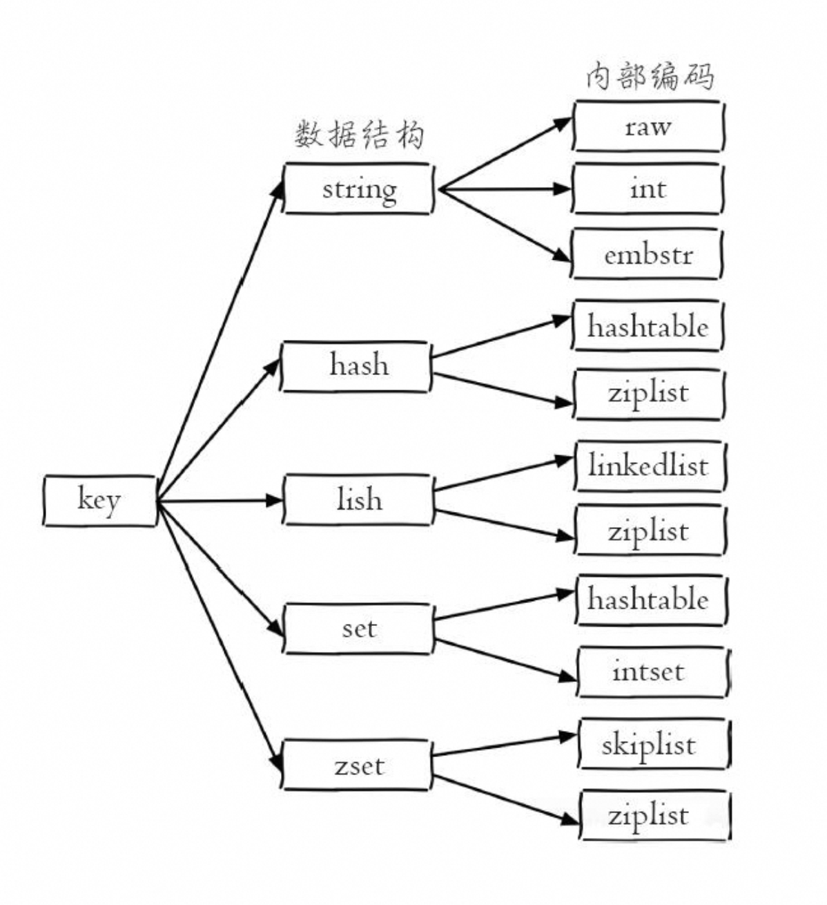

Redis 数据库
一、数据结构

Redis数据结构和内部编码格式
Redis 采用单线程架构
Redis 使用了单线程架构和 I/O 多路复用模型来实现高性能的 内存数据库服务
1. 字符串
字符串类型是 Redis 最基础的数据结构。首先键都是字符串类型，而且其他几种数据结构都是在字符串的基础上构建的。
1.1 命令
- 设置字符串 键-值：
set key value EX seconds PX milliseconds NX XXEX secondes:optional, 将为键设置失效时间，单位为秒。PX milliseconds:optional, 将为键设置失效时间，单位为毫秒。NX:optional, 仅在键不存在时设置值，如果key已经存在，则设置value无效。XX:optional, 仅在键存在时更新值，如果key不存在，则设置无效，如果key存在，则更新值为value
- 除了set选项，Redis还提供了
setex和setnx两个命令 它们的作用和ex和nx选项是一样的 - 获取字符串 键-值：
get key
1.2 内部编码格式
1.3 使用场景
2. 哈希
在Redis中，哈希类型是指键值本身又是一个键值对结构，形如value={{field1，value1}，...{fieldN，valueN}}，Redis键值对和哈希类型二者的关系可以用下图表示：

哈希类型中的映射关系叫作field-value，注意这里的value是指field对应的值，不是键对应的值，请注意value在不同上下文的作用
2.1 命令
-
设置值：
hset key field value如果设置成功会返回1，反之会返回0。此外Redis提供了hsetnx命令，它们的关系就像set和setnx命令一样，只不过作用域由键变为field
-
获取值：
hget key field如果 field 不存在，则返回 nil - 删除 field：
hdel key field [field2 …] - 计算 field 的个数：
hlen key - 批量设置或获取 field-value
- 设置：
hmset key field value [field value ...] - 获取
hmget key field1 [field2 …]
- 设置：
- 判断 field 是否存在：
hexists key field存在返回1，否则返回0 - 获取所有的 field ：
hkeys key - 获取所有的 value：
hvals key - 获取所有的 field-value：
hgetall key
127.0.0.1:6379> hset exa_hash filed1 value1
(integer) 1
127.0.0.1:6379> keys *
1) "ocr-gateway-vpc.redis.rds.aliyuncs.com"
2) "hello"
3) "exa_hash"
127.0.0.1:6379> get exa_hash
(error) WRONGTYPE Operation against a key holding the wrong kind of value
127.0.0.1:6379> hget exa_hash
(error) ERR wrong number of arguments for 'hget' command
127.0.0.1:6379> hget exa_hash filed2
(nil)
127.0.0.1:6379> keys exa_hash
1) "exa_hash"
127.0.0.1:6379> hget exa_hash filed1
"value1"
127.0.0.1:6379> hkeys exa_hash
1) "filed1"
127.0.0.1:6379> hgetall exa_hash
1) "filed1"
2) "value1"
127.0.0.1:6379>
2.2 内部编码
哈希类型的内部编码有两种：
- ziplist（压缩列表）：当哈希类型元素个数小于hash-max-ziplist-entries配置（默认512个）、同时所有值都小于hash-max-ziplist-value配置（默认64字节）时，Redis会使用ziplist作为哈希的内部实现，ziplist使用更加紧凑的结构实现多个元素的连续存储，所以在节省内存方面比hashtable更加优秀。
-
hashtable（哈希表）：当哈希类型无法满足ziplist的条件时，Redis会使用hashtable作为哈希的内部实现，因为此时ziplist的读写效率会下降，而hashtable的读写时间复杂度为O（1）。
-
当field个数比较少且没有大的value时，内部编码为ziplist：
- 当有value大于64字节，内部编码会由ziplist变为hashtable
- 当field个数超过512，内部编码也会由ziplist变为hashtable：
2.3 使用场景
存储用户信息，表类型的机构等。
3. 列表
列表（list）类型是用来存储多个有序的字符串，如下图所示，a、b、c、d、e五个元素从左到右组成了一个有序的列表，列表中的每个字符串称为元素（element），一个列表最多可以存储 2^32-1 个元素。在Redis中，可以对列表两端插入（push）和弹出（pop），还可以获取指定范围的元素列表、获取指定索引下标的元素等。列表是一种比较灵活的数据结构，它可以充当栈和队列的角色，在实际开发上有很多应用场景

列表
列表类型有两个特点：
第一、列表中的元素是有序的，这就意味着可以通过索引下标获取某个元素或者某个范围内的元素列表，例如要获取上图中的第5个元素，可以执行 lindex user：1：message4（索引从0算起）就可以得到元素 e。
第二、列表中的元素可以是重复的
3.1 命令


列表命令时间复杂度
- 添加操作
- 从右边添加数据：
rpush key value [value …] - 从左边添加数据：
lpush key value [value …] - 向某个元素前或后添加元素：
linsert key before|after pivot value- linsert命令会从列表中找到等于pivot的元素，在其前（before）或者后（after）插入一个新的元素value
- 从右边添加数据：
- 查找
- 获取指定范围内的元素列表：
lrange key start end- start是开始下标，（下标范围
0～n-1）
- start是开始下标，（下标范围
- 获取指定下标的元素：
lindex key index - 获取列表长度：
llen key
- 获取指定范围内的元素列表：
- 删除
- 从列表左侧弹出元素：
lpop key - 从列表右侧弹出元素：
rpop key - 删除指定value元素：
lrem key count valuelrem命令会从列表中找到等于value的元素进行删除，根据count的不同分为三种情况：- count>0，从左到右，删除最多count个元素。
- count<0，从右到左，删除最多count绝对值个元素。
- count=0，删除所有。
- 按照索引范围内修剪列表：
ltrim key start end保留 [start, end] 内的元素
- 从列表左侧弹出元素：
- 修改制定索引下标的元素：
lset key index newValue -
阻塞操作
阻塞式弹出如下
blpop key [key ...] timeoutbrpop key [key ...] timeoutblpop和brpop是lpop和rpop的阻塞版本，它们除了弹出方向不同，使用方法基本相同，所以下面以brpop命令进行说明，brpop命令包含两个参数：
key[key...]：多个列表的键。timeout：阻塞时间（单位：秒）。- 当列表为空：如果timeout=3，那么客户端要等到3秒后返回，如果timeout=0，那么客户端一直阻塞等下去，直到列表添加了元素，客户端会理解返回元素。
- 当列表不为空：客户端会立即返回。
在使用brpop时，有两点需要注意。 第一点，如果是多个键，那么brpop会从左至右遍历键，一旦有一个键能弹出元素，客户端立即返回
第二点，如果多个客户端对同一个键执行brpop，那么最先执行brpop命令的客户端可以获取到弹出的值。
127.0.0.1:6379> rpush l1 1 2 3
(integer) 3
127.0.0.1:6379> lpush l1 4 5 6
(integer) 6
127.0.0.1:6379> lrange l1 0 5
1) "6"
2) "5"
3) "4"
4) "1"
5) "2"
6) "3"
127.0.0.1:6379> lindex l1 0
"6"
127.0.0.1:6379> llen l1
(integer) 6
127.0.0.1:6379> lpop l1
"6"
127.0.0.1:6379> rpop l1
"3"
127.0.0.1:6379> lrem l1 0 1
(integer) 1
127.0.0.1:6379> llen l1
(integer) 3
127.0.0.1:6379> ltrim key 1 2
OK
127.0.0.1:6379> ltrim l1 1 2
OK
127.0.0.1:6379> lrange l1 0 2
1) "4"
2) "2"
127.0.0.1:6379> lset l1 0 3
OK
127.0.0.1:6379> lrange l1 0 -1
1) "3"
2) "2"
127.0.0.1:6379> blpop l1 3
1) "l1"
2) "3"
127.0.0.1:6379> blpop l1 3
1) "l1"
2) "2"
127.0.0.1:6379> blpop l1 3
(nil)
(3.08s)
3.2 内部编码
3.3 使用场景
- 消息队列
- 文章列表
4. 集合
集合（set）类型也是用来保存多个的字符串元素，但和列表类型不一样的是，集合中不允许有重复元素，并且集合中的元素是无序的，不能通过索引下标获取元素。如下图所示，集合user：1：follow包含着"it"、"music"、"his"、"sports"四个元素，一个集合最多可以存储 $2^{32}-1$ 个元素。Redis除了支持集合内的增删改查，同时还支持多个集合取交集、并集、差集，合理地使用好集合类型，能在实际开发中解决很多实际问题。

4.1 命令
单个集合内操作：
- 添加集合元素：
sadd key element [element …]- 返回结果为添加成功的元素个数。
- 删除元素：
srem key element [element …]- 返回结果为删除成功的元素个数。
- 计算元素个数：
scard keyscard时间复杂度O(1)，它不会遍历集合，而是直接使用 Redis 内部的变量。
- 判断元素是否在集合中：
sismember key element- 如果给定
element在集合key中返回 1，否则返回0.
- 如果给定
- 随机从集合返回指定个数的元素：
srandmember key [count]- count 是可选参数，如果不写默认为 1.
- 从集合随机弹出元素：
spop key - 获取所有元素：
smembers key- 返回结果是无序的。
集合间操作:

- 求多个集合的交集：
sinter key1 [key2 …] - 求多个集合的并集：
suinon key1 [key2 …] - 求多个集合的差集：
sdiff key1 [key2 …] - 将交集、并集、差集的结果保存
sinterstore destination key [key ...] suionstore destination key [key ...] sdiffstore destination key [key ...]- 保存到
destination key中
快速使用
一、配置&启动&操作&关闭
Redis 安装之后，src 和 /usr/local/bin 目录会有多几个 redis 开头的可执行文件，一般称之为 Redis Shell。
| 可执行文件 | 作用 |
|---|---|
| redis-server | 启动 redis 服务 |
| redis-cli | Redis 命令行客户端 |
| redis-benchmark | Redis 基准测试工具 |
| redis-check-aof | Redis AOF 持久化文件检测和修复工具 |
| redis-check-dump | Redis RDB 持久化文件检测和修复工具 |
| redis-sentinel | 启动 Redis Sentinel |
1. 启动 Redis 服务（redis-server）
有三种方式启动 Redis：默认配置、运行配置、配置文件启动。
（1）默认配置
直接运行 redis-server 命令，会使用默认配置启动 Redis 服务。
（2）运行启动（不推荐使用）
redis-server 加上要修改的配置名和值（可以是多对），没有设置的配置将使用默认配置：
redis-server --configKey1 configValue1 --configKey2 configValue2
#例如，设置 port 为6380
redis-server --port 6380
（3）配置文件启动（推荐）
将配置写入到指定文件里，例如将配置写入到文件 /opt/redis/redis.conf 中，那么启动时只需要执行如下命令：
redis-server /opt/redis/redis.conf
redis-server 有 60 多个配置，这里列出一些常用配置：
| 配置名 | 配置说明 |
|---|---|
| port | 端口号 |
| logfile | 日志文件 |
| dir | Redis 工作目录（存放持久化文件和日志文件） |
| daemonize | 是否以守护进程的方式启动 Redis |
2. Redis 命令行客户端
上面我们已经启动了 Redis 服务，现在介绍如何使用 redis-cli 连接、操作 Redis 服务。redis-cli 可以使用以下两种方式连接到 Redis 服务器。
（1）交互式方式连接 Redis 服务器。（推荐使用）
redis-cli默认连接127.0.0.1:6379，所以可以直接使用redis-cli命令连接这个默认配置服务。
redis-cli -h host -p port -a password # -a 加密码
例如：
redis-cli -h 127.0.0.1 -p 6379
（2）命令方式:
redis-cli -h host -p port command
#例如
redis-cli -h 127.0.0.1 -p 6379 get hello
--> "world"
3. 停止 Redis 服务
Redis 提供了 shutdown 命令来停止 Redis 服务，例如要停掉 127.0.0.1:6379 的Redis 服务，直接运行命令 redis-cli shutdown 即可。
redis-cli shutdown nosave|save
# 使用 save 可以在关闭时生成持久化文件，避免数据丢失
4. 使用 systemd 管理 Redis 服务
可以使用 systemd 服务来管理 Redis，这更加可靠和标准化。在 /etc/systemd/system/ 目录中创建一个名为 redis.service 的文件，并写入以下内容：
[Unit]
Description=Redis In-Memory Data Store
After=network.target
[Service]
ExecStart=/usr/local/bin/redis-server /etc/redis/redis.conf
ExecStop=/usr/local/bin/redis-cli shutdown save
Restart=always
[Install]
WantedBy=multi-user.target
确保路径和配置文件的位置与您的环境相匹配。接下来，重新加载 systemd 配置并启动 Redis：
sudo systemctl daemon-reload
sudo systemctl start redis
sudo systemctl enable redis # 设置为开机启动
二、常用命令
- 查看所有键：
keys * - 查看键的总数：
dbsize - 检查键是否存在：
exists key - 删除键：
del key1 key2 - 设置键过期时间：
expire key seconds -
查看键是否过期：
ttl keyttl命令会返回键的剩余过期时间，它有3种返回值：- 大于等于0的整数：键剩余的过期时间。
-1：键没有设置过期时间。-2：键不存在。- 查看键的数据结构类型：
type key - 查看键的数据结构的 内部编码格式：
object encoding key - 切换数据库：
select db_index